手动变速器基本构成和原理介绍
在实际行驶过程中，不同的路况往往都需要汽车的驱动力和车速能在相当大的范围内变化，为了解决这个问题，就在传动系统中设置了变速器。变速器的主要功用就是改变传动比，满足不同车速要求，还有就是能偶让汽车倒退行驶，以及利用空挡中断动力传递，保证汽车正常启动。
手动变速器，也称手动挡，英文全称为manual transmission，简称MT，即用手拨动变速杆才能改变变速器内的齿轮啮合位置，改变传动比，从而达到变速的目的。踩下离合时，方可拨得动变速杆。
手动变速箱的工作原理
手动变速箱是有不同齿比的齿轮组构成的，它工作的基本原理就是通过切换不同的齿轮组，来实现齿比的变换。作为分配动力的关键环节，变速箱必须有动力输入轴和输出轴这两大件，再加上构成变速箱的齿轮，就是一个手动变速箱最基本的组件。动力输入轴与离合器相连，从离合器传递来的动力直接通过输入轴传递给齿轮组，齿轮组是由直径不同的齿轮组成的，不同的齿轮比例所达到的动力传输效果是完全不同的，平常驾驶中的换挡也就是指换齿轮比。
变速器由变速传动机构和操纵机构组成，变速传动机构主要由齿轮、轴及变速器壳体等零部件组成，它利用不同齿数的齿轮对相互啮合，以改变变速器的传动比；通过增加齿轮传动的对数，以实现倒挡；换挡方式可以采用滑动齿轮、结合套以及同步器三种方式换挡。
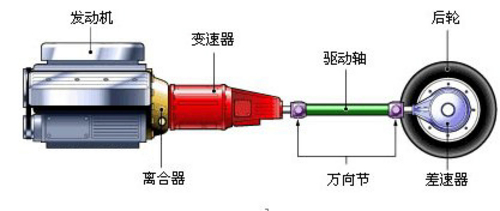 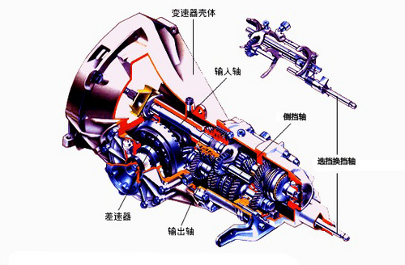普通齿轮式变速器也称轴线固定式变速器（换挡方式可以采用滑动齿轮、结合套以及同步器三种方式换挡。），可分为两轴式变速器和三轴式变速器，两轴式变速器有两根相互平行的轴（输入轴和输出轴），此外还有一根比较短的轴实现倒挡功能。而三轴式变速器只是多了一个中间轴。
拿最简单的五挡变速箱为例，共有三个拨叉，由换挡杆接合的三个杆控制。
三个拨叉分别控制着三个轴环，轴环在输出轴上，当拨叉控制着轴环与相应的齿轮结合之后，动力就可以通过齿轮与轴环输给输出轴。
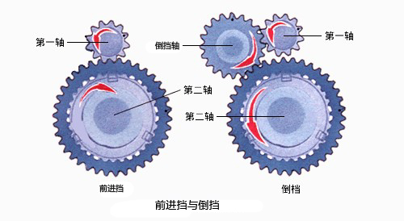 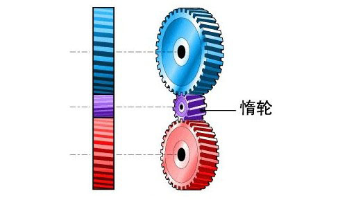每一个变速箱上都会有一个倒挡，其中倒挡齿轮是由一个“惰轮”来操控。所谓“惰轮”是两个不互相接触的传动齿轮中间起传递作用的齿轮，同时跟这两个齿轮啮合，用来改变被动齿轮的转动方向，使之与主动齿轮相同。它的作用只是改变转向并不能改变传动比。
套筒未啮合时
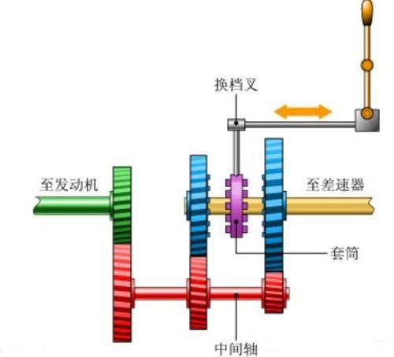输入轴（绿色）也叫第一轴，通过离合器和发动机相连，轴和上面的齿轮是一个硬连接的部件。红色齿轮轴叫做中间轴。输入轴和中间轴的两个齿轮是处于常啮合状态的，因此当输入轴旋转时就会带动中间轴的旋转。黄色则是输出轴，它也叫第二轴直接和驱动轴相连（只针对后轮驱动，前驱一般为两轴），再通过差速器来驱动
汽车。当车轮转动时同样会带着花键轴一起转动，此时，轴上的蓝色齿轮可以在花键轴上发生相对自由转动。因此，在发动机停止，而车轮仍在转动时，蓝色齿轮和中间轴出在静止状态，而花键轴则随车轮转动。这个原理和自行车后轴的飞轮很相似。蓝色齿轮和花键轴是由套筒来连接的，套筒随着花键轴转动，但同时也可以在花键轴上左右自由滑动来啮合齿轮。
套筒啮合时
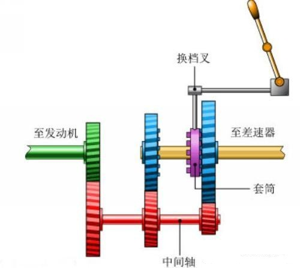说完这些，换挡的过程就很好理解了，当套筒和蓝色齿轮相连时，发动机的动力就会通过中间轴传递到输出轴上，在这同时，左边的蓝色齿轮也在自由旋转，但由于没有和套筒啮合，所以它不对花键轴产生影响。而如果套筒在两个蓝色齿轮之间时，变速箱在空挡位置，此时两个蓝色齿轮都在花键轴上自由转动，互不干涉。
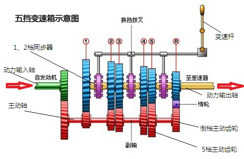 参考：普通齿轮变速器和分动器第一轴和第一轴常啮合齿轮为一个整体，是变速器的动力输入轴。第一轴前部花键插于离合器从动盘毂中。
在中间轴上制有（或固装）有六个齿轮，作为一个整体而转动。最前面的齿轮与一轴常啮合齿轮相啮合，称为中间轴常啮合齿轮，从离合器输入一轴的动力经这一对常啮合齿轮传到中间轴各齿轮上。向后依次称各齿轮为中间轴三档、二档、倒档、一档和五档齿轮。
在第二轴上，通过花键固装有三个花键毂，通过轴承安装有二轴各档齿轮。 其中从前向后，在第一和第二花键毂之间装有三档和二档齿轮，在第二和第三花键毂之间装有一档和五档齿轮，它们分别与中间轴上各相应档齿轮相啮合。在三个花键毂上分别套有带有内花键的接合套，并设有同步机构。通过接合套的前后移动，可以使花键毂与相邻齿轮上的接合齿圈连接在一起，将齿轮上的动力传给二轴。其中在第二个接合套上还制有倒档齿轮。第二轴前端插入一轴齿轮的中心孔内，两者之间设有滚针轴承。第二轴后端通过凸缘与万向传动装置相连。
当变速器第一轴被离合器从动片驱动时，第一轴常啮合齿轮通过中间轴常啮合齿轮带动中间轴转动，中间轴上各档齿轮又带动二轴上相应各档齿轮转动。在各接合套都位于花键毂中央，未挂档时，二轴上各档齿轮都在二轴上空转，二轴不输出动力，变速器处于空档状态；当变速器操纵机构将二轴上某一档齿轮的接合齿圈与其邻近的花键毂通过接合套挂通时，已传到中间轴齿轮的动力经过中间轴和二轴上的这一对齿轮、接合套及花键毂又传到二轴上，变速器处于该档工作状态。当第一花键毂通过接合套与前面第一轴常啮合齿轮的接合齿圈挂通时，来自输入轴的动力直接传到输出轴上，这时变速器的传动效率最高，这一档位称为直接档。
为了能够在发动机曲轴转动方向不变的情况下倒车行驶，在变速器中设置了倒档轴。倒档齿轮通过轴承活套在倒档轴上（图中未画出）。当第二接合套位于中间位置时，其上边齿轮正好与中间轴倒档齿轮相对。用换档拨叉把倒档齿轮拨到与这两个齿轮相啮合位置，中间轴上的动力就会经倒档齿轮、第二接合套上的齿轮和第二花键毂传到二轴上。倒档齿轮起到了改变转动方向的作用。
在有些变速器上，二轴上齿轮及相应中间轴上各齿轮均为直齿园柱齿轮。二轴上齿轮通过花键安装在二轴上，可以沿轴向相对于二轴滑动。采用移动二轴上齿轮的换档方式，使二轴上的各档齿轮与中间轴各档齿轮有选择地挂通，从而实现不同档位的变换。也有的变速器只采用接合套换档，而没有同步装置。这样的变速器在换档时，都存在不能避免齿轮冲击的缺点，随着制造技术的发展，目前变速器普遍采用了同步器换档方式。
一个传统的5速手动变速箱换挡的原理也是一样的，只是变速箱结构中增加了套筒和齿轮组的数目，使之拥有更多的挡位。而倒挡则是通过在中间轴（红色）和输出轴（蓝色）之间增加一个齿轮来实现的。由于增加了一个啮合齿轮，因此倒挡的齿轮始终会朝其他齿轮相反的方向转动。这个齿轮由于只起到改变齿轮旋转方向的作用，因此也称为惰轮。
当离合器接合时，不管是在空档或任何档位上，变速器中的每个档位的齿轮（主动和从动齿轮）都是始终啮合在一起并按照各自的转速不停地旋转。
在空档时，各个档位的所有从动齿轮并没有和输出轴连接，此时输出轴是静止不动的；
当你挂上1-5等前进档时，实际上是将1档或其它档位的从动齿轮通过同步器（或称犬牙啮合器）和输出轴接合起来共同旋转。当变换档位时，则是换成新档位的从动齿轮和输出轴接合并共同旋转。
倒档的主动齿轮和从动齿轮之间又“夹”了一个中间轮，这样就可使输出轴的旋转方向与其他档位相反。
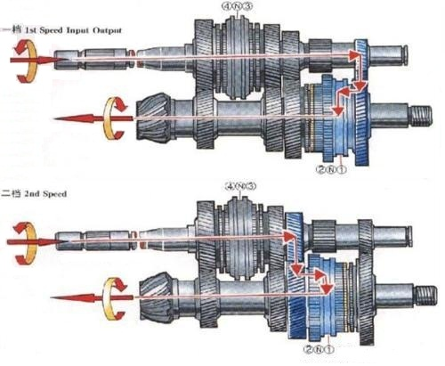5挡二轴变速器结构，输入轴与主动齿轮整合为一体，简化了结构也节省了空间.
除了上述的传统三轴手动变速箱，目前轿车上广泛使用的是二轴手动变速箱，它的结构和三轴变速箱基本类似，只是其输入轴和中间轴整合为一根轴，因此具有结构简单，尺寸小的优势，另外，它还有中间挡位传动效率高，且噪音较小等特点，因此更适合一般的前置前驱家用车，是目前使用最广的轿车变速器形式，它的缺点是不能设置直接挡，且一挡的传动比不能设计的太高。而在后驱车上，使用较多的仍是传统的三轴式变速箱。
同步器是利用摩擦原理实现的，它主要由接合套、同步锁环等组成，作用是在与犬齿接触前，使轴环与齿轮发生有摩擦的接触。这样，在犬齿接合前，就可以使轴环和齿轮速度达到同步可以从结构上保证待啮合的接合套与接合齿轮的花键齿在达到同步之前不可能接触，可以避免齿间冲击和噪音。
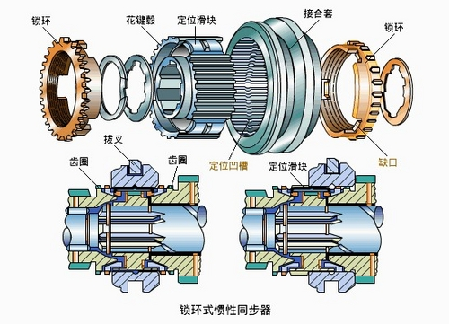 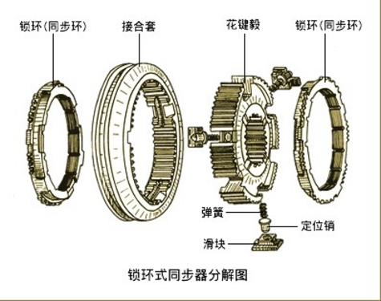常见的同步器种类有锁环式惯性同步器，锁销式惯性同步器以及自行增力式同步器，接合套、同步锁环和待接合齿轮的齿圈上均有倒角（锁止角），同步锁环的内锥面与待接合齿轮齿圈外锥面接触产生摩擦。锁止角与锥面在设计时已作了适当选择，锥面摩擦使得待啮合的齿套与齿圈迅速同步，同时又会产生一种锁止作用，防止齿轮在同步前进行啮合。

当同步锁环内锥面与待接合齿轮齿圈外锥面接触后，在摩擦力矩的作用下齿轮转速迅速降低（或升高）到与同步锁环转速相等，两者同步旋转，齿轮相对于同步锁环的转速为零，因而惯性力矩也同时消失，这时在作用力的推动下，接合套不受阻碍地与同步锁环齿圈接合，并进一步与待接合齿轮的齿圈接合而完成换挡过程。
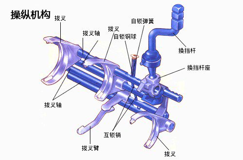 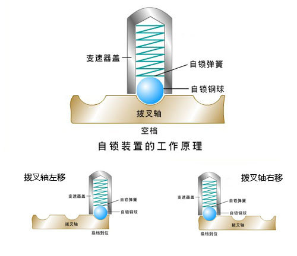变速器的操纵机构主要由变速杆、拨块、拨叉和拨叉轴等组成，用来完成换挡的基本动作。在操纵结构上，为了保证换挡到位，防止同时挂入两挡，或者误挂倒挡，保证变速器安全可靠的工作，从而有了自锁和互锁以及倒挡锁等安全装置。
一般的手动变速箱，都是通过推杆连接或者是拉线来控制换挡的。推杆连接的换挡控制方式，更为直接但是传递的振动会很大；而拉线式的虽然没有振动，但是挡位显得不是很清晰，可谓是各有优劣。除了这两种纯机械式的换挡控制，此外，还有使用电控装置换挡的手动变速箱，它可以很好的结合推杆和拉线换挡之间的优点。这种变速箱在换挡的时候，挡拨动变速杆到相应的挡位，在变速器里就会有电机驱动相应的拨叉控制套筒与齿轮咬合，因此不存在挡位不清晰的问题，而且换挡的行程也可以控制在很理想的范围。
由于换挡的时候，想要顺利的换挡，换挡前后两组主动齿轮的转速就要保持一致，就算不一致，也至少保证速度相近，但是由于前后两组齿轮比是不同的，所以在行驶过程中是不可能出现这样的情况的。如果没有同步器，司机可以采用空挡时加一脚油，两脚离合的方式来逼平两个挡位间的转速，这就是为什么以前没有同步器的手动挡车型都需要换挡时都需要两脚离合的原因了。
对于采用了同步器换挡的变速箱来说，换挡顺畅与否，很大程度需要取决于同步器优劣。同步器其实说白了就是在结合套和齿轮组上布置的摩擦片，与一般摩擦片不同的是，它的摩擦面是锥形的。这组摩擦片的作用是在直齿和圆盘的立齿相接触以前，提前进行摩擦，来将转速较大的一方的能量传递给转速较小的一方，使得转速较小的一方提升转速，达到与转速较大的一方转速同步。这样不仅可以保证正常换挡，还能起到缓冲的作用，而锥面摩擦片组的数目与材质则直接影响到了同步器性能的优劣。 而大众经典的MQ200手动变速箱的同步器拥有三组锥面摩擦片，这也造就了这台变速箱出色的入挡手感。
那么，一台优秀的手动变速箱需要具备哪些特点呢？首先变速箱必须要拥有良好的挂挡手感，每个挡位清晰，拥有合理的横向和纵向行程，入挡的阻力小并带有吸入感。除此之外更重要的是，各挡位之间的齿比排布必须合理。因为各个挡位间的传动比分布，直接影响车辆行进中动力衔接的畅顺性，通常要求低挡能有力加速，高挡能达致高速同时省油，且各挡间的距离要均匀，不然就会很容易造成换挡时窜车的情况。
手动变速箱的优缺点分析
优点显而易见，它结构简单，性能可靠，制造和维护成本低廉，且传动效率高（理论上会更省油），另外，由于是纯机械控制，换挡反应快，且可以更直接的表现驾驶者的意愿，因此也更富驾驶乐趣，这些都是手动变速箱的优点。不过相比自动变速箱，它操作繁琐，而且在挡位切换时顿挫明显的劣势也是无法弥补的。
总结：
今天我们介绍了有关变速器的基本构成和原理介绍，用比较直白的话说就是利用齿轮的齿比来满足相同动力输入不同动力输出的需求，而倒挡则是采用增加的一个齿轮来让动力反向输出。原理简单，但是这之中涉及到的操作装置却很多。而在接下来的篇章中，我们将会为您继续扩展相关知识。（文 图/汽车点评网 张丹）